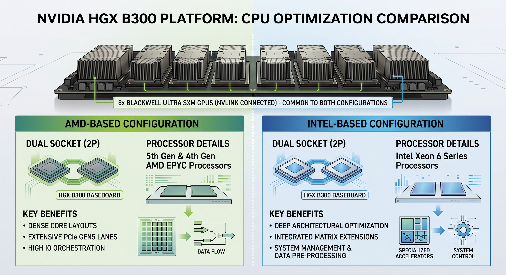

This page is an add-on to the main page trilemmas. If the jargon below feels dense, learn the main principles first: the AI deploying trilemma (where the model lives), Blackwell is a family, model parallelism, long context is not free, knowledge engrams, cache offloading, prefill-decode disaggregation, MoE serving, and multi-token prediction.
Chat users send short prompts, agents fire long multi-turn workloads - each shape stresses the datacenter differently (prefill-heavy vs decode-heavy). Raw tok/s is vanity; what a DC actually sells is goodput - tokens landing inside TTFT/TPOT SLOs per dollar of hardware. That is why the config tables below differ per workload.
Today's MoEs are balanced - all experts are roughly the same size. Common misconception: a dedicated expert for coding and one for legal. Not true. To shard an LLM we want the opposite: the router picks many experts, nearly randomly, and the same set of experts can be loaded multiple times, so the load spreads across GPUs - hence the trend to more, smaller experts. More on this in the MoE sparsity section and the EP/MoE rows in the config maps below.
Draft a few tokens with a cheap model, verify them with the big one in a single pass - more tokens per second when drafts get accepted. It can be a built-in MTP head you just switch on, or an external drafter like EAGLE-3, DFlash 2 (parallel diffusion drafting), or DeepSeek's DSpark (dynamic scheduling adapts drafting to load). The message: different implementations have different perf and tradeoffs - extra memory for draft weights and cache, wasted compute on rejected drafts, and acceptance depends on the workload, so a wrong pick can be slower than no speculation at all.
SSM layers keep a compact fixed-size state instead of a growing KV cache, and a few attention layers stay in the mix for exact recall - smaller KV cache overall, smaller mem footprint. Qwen3.8-Flash-Next is exactly that: a GDN + QSA hybrid (3 of 4 layers Gated DeltaNet, the 4th Qwen Sparse Attention).
Main tricks: quantize, sparsify, page, offload, and sliding window + global dual attention - most layers only see a small recent window while a few global layers keep long-range recall, so the cache grows far slower than the context. The kicker: smaller cache = more things cached at once = more users and longer context on the same HBM. More volume with caching makes DC serving cheaper - that loop is DC tokenomics, the lever behind the big Dynamo-based configs in the InferenceX SemiAnalysis perf graphs.
Coming later - the main part of this deep dive will be the InferenceX SemiAnalysis perf-graph deep dives (total tokens per $1 TCO vs P90 interactivity, every point has a story). The vLLM MiniMax-M3 recipe below documents the exact MI355X lane the graphs run. Configs first - graphs follow.
DC GPUs are in fact whole infra structure slices (simplified charging per slice used by NeoClouds). Rest of infra was at first not so important, but today it also serves KV cache, engram dictionary, agents, so looking deeper and understanding the whole infra is important.
Coming in 8x GPU chassis (servers) with NVLink switch, small can be also 2x GPU NVLink bridge. The apples-vs-oranges part: DGX is the turnkey box you buy whole, HGX is the baseboard OEMs build their own servers on. The core is locked either way - 8x Blackwell, 1,440 GB (B200) / 2,300 GB (B300) HBM3e, 2x Xeon 8570, 14.4 TB/s NVLink. What you can configure around it: 2-4 TB RAM, ~30 TB NVMe cache, and ConnectX-7 or BlueField-3 NICs.
Can be custom configured for workload during production - not fully reproducible, but the plus is familiar x86 architecture - same CPUs (2x Xeon 8570) as the locked core above.

Not only GPU - a CPU (ARM) Grace with C2C NVLink, but many times in unified pods with nvidia networking, storage and so on - full nvidia recipe !!! 100% reproducibility. The NVL72 rack packs 36 Grace CPUs + 72 Blackwell GPUs into one 72-GPU NVLink domain with 130 TB/s NVLink bandwidth. GB300 Ultra goes further: 20 TB HBM3e, 1.5x FP4 and 2x attention throughput for reasoning workloads.
Unified and fully reproducible, but Grace CPU is ARM architecture - aarch64 only, so ops tooling and kernels must support it. The tradeoff mirrors the HGX side: reproducibility vs familiarity.
Notes:
See more in howto.hybridai.click - Automating HybridAI on NeoCloud with Agentic Infra approach
Model glance - 176B total parameters, ~6B active per token. The twist: 51B of the total is an N-gram embedding table that can live in host RAM and be prefetched asynchronously. Attention is a GDN + QSA hybrid (3 of 4 layers Gated DeltaNet, the 4th Qwen Sparse Attention). 262K native context, extensible to 1M with YaRN. Always reasons - thinking cannot be turned off.
| Engine | Hardware | Layout / precision | Validated on |
|---|---|---|---|
| vLLM | 2x GB300 (min) / 4x GB300 (full tray) | TP2 / TP4, FP8 | TP2 is the validated FP8 minimum; TP4 and TEP4 validated incl. MTP3 |
| vLLM | 8x H200 | TEP8, FP8 + Triton MoE | plain TP8 won't even load - incompatible with 128-wide FP8 quant blocks |
| vLLM | 4x MI355X | TP4, FP8 + AITER | ROCm path with VLLM_ROCM_USE_AITER=1 |
| vLLM | 1x B200/B300/GB300 (TP1) | TP1, NVFP4 | Blackwell-only quant; TP1 compile OOMs on GB300 - use TP2/TP4 |
| SGLang | 4x H200/B200/B300/GB300 | TP4, FP8; low-latency adds MTP (NEXTN) | high-throughput swaps in EP4, no spec decoding |
| SGLang | 8x MI350X/MI355X | TP8, FP8 + AITER | balanced strategy, page-size 32 |
--max-num-seqs 256 or the GDN recurrent-state cache errors at startup.Fireworks serves dedicated FP8 and NVFP4 deployments. Baseten - 404 at check time, recheck. Together - not yet, recheck.
Model glance - 428B total parameters, ~23B active per token (128 experts, 4 active per token). MiniMax Sparse Attention - a block-sparse "lightning indexer" that keeps long-context cost low (reported ~9x prefill / ~15x decode speedup over M2 at 1M context). 1M-token context. One quirk that shapes every config: --block-size 128 (SGLang: page-size 128) is mandatory on every platform - the MSA sparse/index cache must match.
| Engine | Hardware | Layout / precision | Validated on |
|---|---|---|---|
| vLLM | 8x H200 / H20 | TP8, BF16 | tight single-node BF16 fit; TP8+EP and DP8+EP variants too |
| vLLM | 8x B200 | TP8, NVFP4 | pair with EAGLE3 draft (MHA or GQA head, 3 spec tokens) |
| vLLM | MI300X/MI325X/MI355X | TP8, MXFP8/MXFP4 + AITER | MXFP8 runs from TP4 on gfx950; MI300X stacks accuracy-safe scheduling levers |
| SGLang | 8x H200 | TP8, BF16 | 1044 tok/s/GPU, GSM8K 97.0 |
| SGLang | 8x B200 | TP8, MXFP8 | 2385 tok/s/GPU, GSM8K 96.5 |
| SGLang | 4x B300 / GB300 | TP4, MXFP8 | 3285 tok/s/GPU on B300; 4323 tok/s/GPU on GB300 (8K-in/24-conc row) |
| SGLang | 8x MI3xx / MI355X | TP8, MXFP8 + AITER (TP4 on gfx950) | 420 tok/s/GPU on MI355X (1K-in/1K-out row) |
PD disaggregation - validated presets (the only model of the two with them)
M3 runs prefill and decode on separate SGLang servers linked by an RDMA KV-transfer fabric (mooncake or NIXL), fronted by the PD router. The MSA-specific bit: every sparse lightning-indexer layer keeps a K-only index buffer that must reach the decode server too - SGLang transfers it alongside the main KV with no extra flags.
Fireworks serves serverless up to 512K context with public perf targets (TTFT P50 1 s / P90 6 s). Together serves 1M context serverless and dedicated. Baseten offers it in the Model API (no published configs).
One word, two very different jobs. Mixing them up makes vendor slides and engine jargon unreadable. One buys you FLOPS, the other fights the memory bottleneck.
Sparse tensor formats (COO, HiCOO and friends) are data structures that let the hardware skip zero blocks entirely - you store and compute only the nonzero stuff. This is the trick behind NVIDIA sparse tensor cores and the big FLOPS-advantage multipliers vendors love to put on slides (10x-class numbers show up there - take them as marketing best-case, structured sparsity usually lands closer to 2x).
A Sparse Tensor Benchmark Suite for CPUs and GPUs (IEEE Computer Society):
The MoE flavor of sparsity is about the bandwidth wall, not FLOPS. A huge total weight set sits in HBM, but per token only a few experts wake up - so you read and compute only a tiny slice of the weights instead of streaming all of them. Less weight traffic per token is how MoE fights the HBM bandwidth wall that caps decode speed (TPOT).
A Visual Guide to Mixture of Experts (MoE) in LLMs (Maarten Grootendorst):
The EP/MoE rows in the config maps are concept 2 - expert-parallel sharding works because only a few experts are active per token. The sparse attention indexers (Qwen QSA, the MiniMax-M3 lightning indexer) borrow concept 1's data-structure tricks to cut memory traffic on long context. Same word, different levers - now the jargon should read cleanly.
All configs above were checked on 2026-09-01. The recipes move fast (day-0 models, nightly images) - recheck before reserving hardware.
Qwen 3.8 Flash Next Tested: Is it Actually Fast?
MiniMax M3 explained in 8 min:
The Insane Infrastructure Design of DeepSeek V4:
Kimi K3 Architecture Explained - how the world's largest open-weight AI model works: